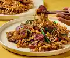

Fried Kuey Teow

Description
Fried Kuey Teow is a smoky, savory hawker dish of flat rice noodles stir-fried over high heat.
Ingredients
- 440g fresh flat rice noodles
- 2 large eggs
- 10 large prawns
- 1 Chinese sausage
- 100g fresh bean sprouts
Steps
- cooking ....
- cook until done.
Home